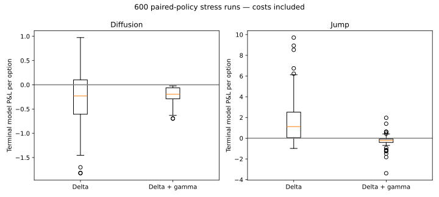
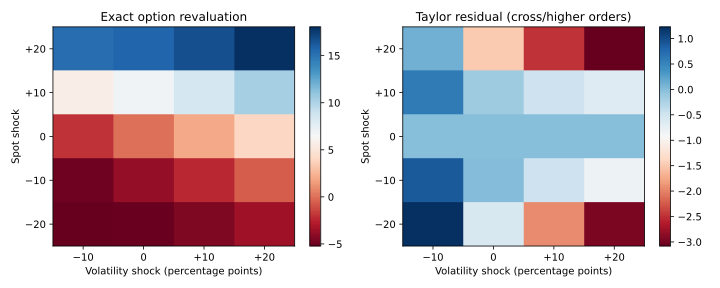
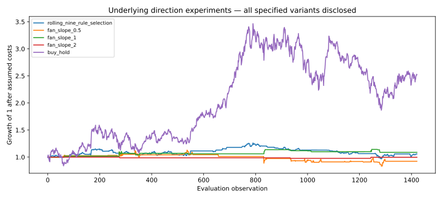

Research dashboard · 24 October 2026 · 32 tests
Derivatives & Systematic Risk Research
Greeks → delta/gamma hedging → revaluation stress → chronological rule experiments
Decision and evidence
Combines the derivatives hedging engine with the causal strategy research kernel. Option-risk experiments and underlying-direction experiments share accounting conventions but keep their P&L and assumptions separate.
Finding. The specified Gann-inspired fan variants all underperform DLF buy-and-hold in this retrospective test. Delta/gamma hedging reduces simulated hedge error under its pricing assumptions. Neither result establishes an executable options edge.
How much hedge error remains after controlling delta and gamma, and what does the hedge cost?
- Price and measure exposure. Use the pricing model to compute sensitivities, then compare exact spot/volatility repricing with the local delta-gamma-vega approximation. Large shocks expose higher-order and cross-risk.
- Hedge with explicit constraints. An option offsets gamma and stock offsets residual delta. Hedge-option positions are capped near unstable gamma denominators. Fees, discrete rebalancing and jump paths are retained.
- Compare error and cost. In the simulated diffusion case, hedge RMSE falls from about 0.615 to 0.249 model currency units with delta-gamma hedging, while mean fees rise from 0.176 to 0.198. These are model-based risk/cost trade-offs, not tradable option-chain results.
- Keep directional experiments separate. The Gann-inspired fan is a documented scaled rule, tested alongside a chronological rule selector and buy-and-hold. All fan variants underperform buy-and-hold in this sample; they are not a validated forecasting method.
Calculation: Hedge-option units = −target gamma / hedge-option gamma (capped); stock units offset residual delta. Approximate ΔV = delta·ΔS + ½gamma·(ΔS)² + vega·Δσ.
Evidence: pricing.py · gamma_hedge.py · strategy_experiments.py · results/gamma_summary.json · results/greek_stress.csv
Research views



Model mechanics
Gamma hedge = −target gamma / hedge-option gamma, subject to position limits; stock offsets remaining delta. Exact spot/volatility repricing is compared with delta + half gamma + vega approximation. The fan line uses a trailing low and explicitly scaled price-change standard deviations per bar, observed through t−2.
From basic input reconciliation to stress analysis, each step has an auditable calculation trail in the repository.
Boundaries
Gann fan settings are one explicit experimental definition, not a canonical or validated predictive rule. Options are model-priced, with assumed liquidity and no real chain. Taylor residuals include cross and higher-order risk.
Offline research software, not a production trading or asset-management system.
Data and reproducibility
Seeded synthetic option paths plus vendor-adjusted DLF closes accessed 24 October 2026. Gann drawing reference: TradingView support; this normalized rule is our documented variant. Sources and hashes in result JSON.
- Option revaluation stress (CSV)
- Historical strategy returns (CSV)
- Hedge trials (CSV)
- Gann fan reference
summary.json — exact results and assumptions
{
"source": {
"name": "Yahoo Finance adjusted DLF closes",
"url": "https://finance.yahoo.com/quote/DLF.NS/history/",
"access_date": "2026-10-24",
"sha256": "1298ee925e4e8547aec0745f4dbe4f1b961918f1ff47f81d691f28cf18e64ea4"
},
"results": {
"rolling_nine_rule_selection": {
"observations": 1422,
"total_return": 0.05785017679097937,
"cagr": 0.010016183814556712,
"sharpe_zero_rf": 0.15890577248278936,
"max_drawdown": -0.23426376894429912
},
"fan_slope_0.5": {
"observations": 1422,
"total_return": -0.07730805750541025,
"cagr": -0.01415753488142324,
"sharpe_zero_rf": -0.06151812844686235,
"max_drawdown": -0.2611955964242104
},
"fan_slope_1": {
"observations": 1422,
"total_return": 0.08719516133880933,
"cagr": 0.014925682607003665,
"sharpe_zero_rf": 0.28211294541541565,
"max_drawdown": -0.058509839285537435
},
"fan_slope_2": {
"observations": 1422,
"total_return": -0.0039023143829248763,
"cagr": -0.0006926622251820502,
"sharpe_zero_rf": -0.06155170061848798,
"max_drawdown": -0.02222691997390258
},
"buy_hold": {
"observations": 1422,
"total_return": 1.5202410337248526,
"cagr": 0.1779900824808851,
"sharpe_zero_rf": 0.648868581832222,
"max_drawdown": -0.4614403518082776
}
},
"cost_bps": 10,
"assumptions": "Fan anchored at trailing 63-observation low through t-2; slope in trailing standard-deviation-of-price-change units per bar. Equal allocation to positive signals, no shorts. Slopes .5/1/2 reported without selecting a winner.",
"reference": {
"name": "TradingView Gann fan definition",
"url": "https://www.tradingview.com/support/solutions/43000518151-gann-fan-drawing-tool/",
"access_date": "2026-10-24"
},
"limitations": "Our normalized fan is an explicit experimental variant, not a uniquely canonical Gann implementation. Same historical sample previously inspected. Equity benchmark P&L is distinct from model-priced option hedge results. No empirical options alpha inferred."
}gamma_summary.json — exact results and assumptions
{
"results": {
"diffusion_delta": {
"runs": 150,
"rmse": 0.6146301716512272,
"mean_pnl": -0.2580104645031913,
"mean_fees": 0.1755071874127809
},
"diffusion_delta_gamma": {
"runs": 150,
"rmse": 0.2485548444114554,
"mean_pnl": -0.1997401055584888,
"mean_fees": 0.19783908645233558
},
"jump_delta": {
"runs": 150,
"rmse": 2.4967802320726444,
"mean_pnl": 1.5180436598232727,
"mean_fees": 0.1753997637759431
},
"jump_delta_gamma": {
"runs": 150,
"rmse": 0.5399311494284604,
"mean_pnl": -0.2586365477998516,
"mean_fees": 0.2142380688218023
}
},
"assumptions": {
"pricing_vol": 0.25,
"rate": 0.02,
"hedge_option_extra_days": 21,
"stock_cost_bps": 5,
"option_cost_bps": 20,
"max_hedge_options": 5
},
"source": "Synthetic price paths, hedging.py; model-priced calls",
"source_url": "https://github.com/Anjaney336/derivatives-hedging-research/blob/main/hedging.py",
"access_date": "2026-10-24",
"limits": "Same-close theoretical fills, no option chain, margin, borrow fees, dividends or liquidity constraint. Gamma capped near unstable denominators; residual risk reported."
}